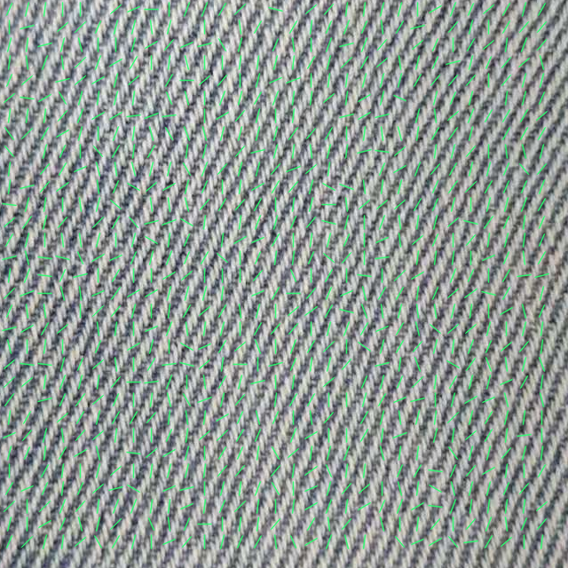
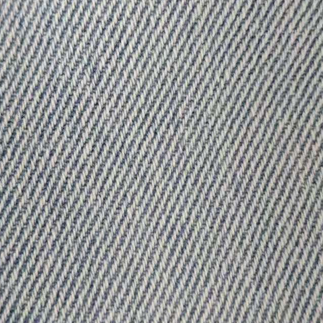
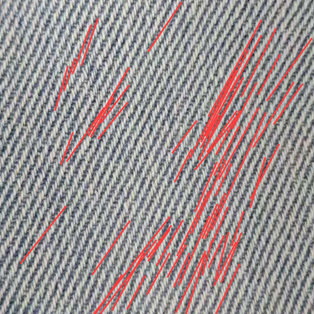

局部方向场


A组中心线


B组中心线

宽度边缘

斜纹线段


版本 report-system-1.1；Gate 3：LOW_CONFIDENCE。未形成两组中心线
候选片段编号不等于物理纱线根数。实线连接相邻观测，虚线跨越缺失采样。未有独立真值的准确率记为 NOT_EVALUATED。
单张反射图：无透射证据
| 步骤 | 模块 | 本次输出状态 |
|---|---|---|
| 01 | 图片质量 Gate | PASS |
| 02 | 有效织物 ROI | PASS |
| 03 | 几何与光照归一化、双图配准 | NOT_APPLICABLE |
| 04 | Structure Tensor 局部方向场 | REJECTED |
| 05 | 分方向滤波增强 | UNAVAILABLE |
| 06 | Ridge Detection 与中心线连接 | LOW_CONFIDENCE |
| 07 | 中心线清洗 | LOW_CONFIDENCE |
| 08 | 经向提示映射 | UNAVAILABLE |
| 09 | 计数与中位间距双路径密度 | LOW_CONFIDENCE |
| 10 | 经密、纬密与经纬比 | LOW_CONFIDENCE |
| 11 | 经纬纱表观宽度 | LOW_CONFIDENCE |
| 12 | 左斜右斜与斜纹角度 | LOW_CONFIDENCE |
| 13 | 交点浮沉与组织候选 | UNAVAILABLE |
| 14 | Gate 3 综合质量判断 | LOW_CONFIDENCE |
{
"density": {
"families": {},
"calibration_status": "UNAVAILABLE",
"candidate_ratio_count": null,
"ratio_count": null,
"candidate_ratio_spacing": null,
"ratio_spacing": null,
"dependency": "Both density paths use the same detected centers; agreement is not independent truth"
},
"widths": [],
"twill": {
"status": "LOW_CONFIDENCE",
"reasons": [
"weak_direction_support_fraction"
],
"image_angle_deg": 118.54857285282044,
"acute_angle_deg": 61.45142714717956,
"gabor_angle_deg": 117.0,
"hough_dispersion_deg": 5.859286294014533,
"angle_source": "length_weighted_Hough_cluster",
"direction_scope": "image slant only; face, mirroring and warp identity must be checked for physical twill handedness",
"direction": "right_rising",
"direction_convention": "right_rising=/ rises toward upper right; left_rising=\\ rises toward upper left; image y points down",
"multiscale_winner_deg": [
117.0,
117.0,
117.0
],
"multiscale_max_deviation_deg": 0.0,
"Hough_support_fraction": 0.08263506370043656,
"tensor_mass_within_12deg": 0.6467859629827823,
"physical_accuracy": "NOT_EVALUATED"
},
"weave": {
"status": "UNAVAILABLE",
"reasons": [
"two_centerline_families_required"
],
"candidate": null
},
"yarn_reference": [],
"gate3": {
"status": "LOW_CONFIDENCE",
"reasons": [
"transmission_not_provided",
"registration",
"physical_scale_not_confirmed",
"density_or_centerlines",
"warp_weft_identity_not_mapped",
"widths"
],
"auxiliary_warnings": [
"twill_low_confidence",
"weave_low_confidence",
"Ne_tex_reference_unavailable"
],
"physical_accuracy": "NOT_EVALUATED",
"eligible_for_physical_release": false,
"meaning": "implementation quality conditions, not physical ground-truth accuracy"
}
}